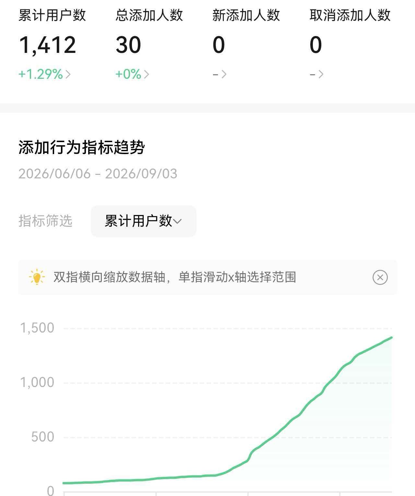

AI雕兄·小红书评论区获客
AI 运营教练 · AI杨小过
接着上面，还有 5 个
4
效果会咋样？能测算吗？
先看战绩：我自己号上跑了 15 天——没投广告、没买流量，1000+ 真人加进微信。
这 1000+ 全是从评论区一个个接回来的——只跟主动问「哪家好」的人聊。也不只是评论区：笔记、配图、视频天天在出，私信接着跟，聊过的全进客户名单。
效果看两档：第一个月看信号——名单天天加人；两三个月看加微信的人数。效果因人而异，出单靠您的产品，我保证流量动作天天在跑。

5
我这套是怎么做的？
不是零散几个功能——我把整套运营体系搬进了系统，专门给小生意做的。
① 发笔记帮您选题 → 圈人 → 整理素材 → 发笔记（IP 玩法立人设、知识、引流、案例）
② 评论区唠嗑扫同行和热门笔记的评论区，只跟主动问「哪家好」的人聊
③ AI 客服跟进聊得来的，接上私信——话术您点头才发，都记进客户名单
6
跟代运营、买 AI 工具的比呢？
买 AI 工具
时好时坏、爱瞎编：昨天能用今天废；活儿一点没省，还得您自己干；简单任务也烧最贵的模型，账单吓人
找代运营
一个人盯 N 个号、套模板，给不了行业定制；不可能 24 小时——漏一个客户就是漏一笔钱；号在别人手里，人走号空
AI雕兄
整条流水线固化进系统：方向、内容、客户、时机全管；知识库只引用您的真数据，编不出来；电脑开着 24 小时盯评论捞客、跟单
说到底：一个工具，顶 N 个人的运营团队。
7
我不懂小红书，您是全盘负责吗？
全盘都在系统里——您每天只花 10 分钟，其余全自动。
账号诊断、内容规划、评论区动作、客户维护，都在里面。装好后交给您门店的顾问、或店员直接就能跑——不用再找人专门维护。
8
这个要花多少钱？
可以免费试用 1 个月，免费发 50 篇笔记，不用先花钱——装在自己电脑上就能跑，值不值自己看。
想开始？联系我免费做个测评——我看完您的号和行业，告诉您怎么上手。
落地页二维码
（待飞书链接）
（待飞书链接）
扫码看完整版每个问题的详版答案 · 演示视频
免费测评入口，都在里面
免费测评入口，都在里面

想直接聊，加我微信备注「测评」，3 分钟演示直接发您
微信同号 13360308932
微信同号 13360308932
AI杨小过 · AI 运营教练 · 前大厂码农 · 江湖散人